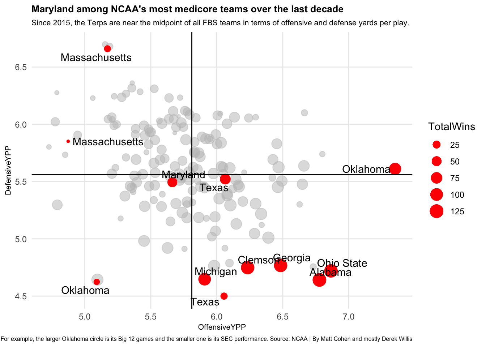
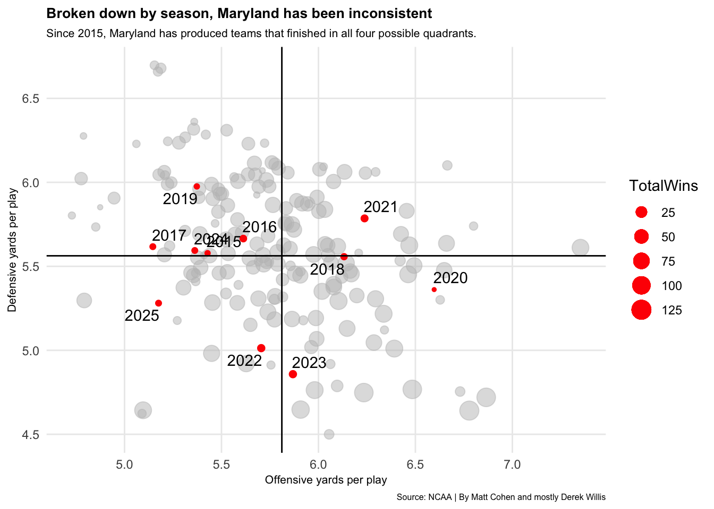
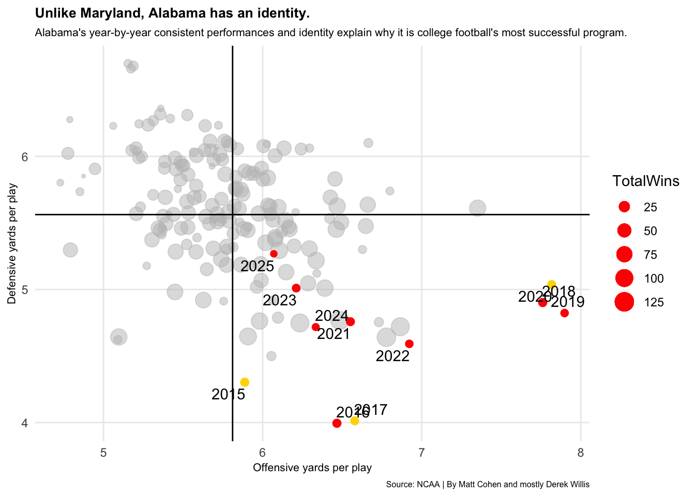
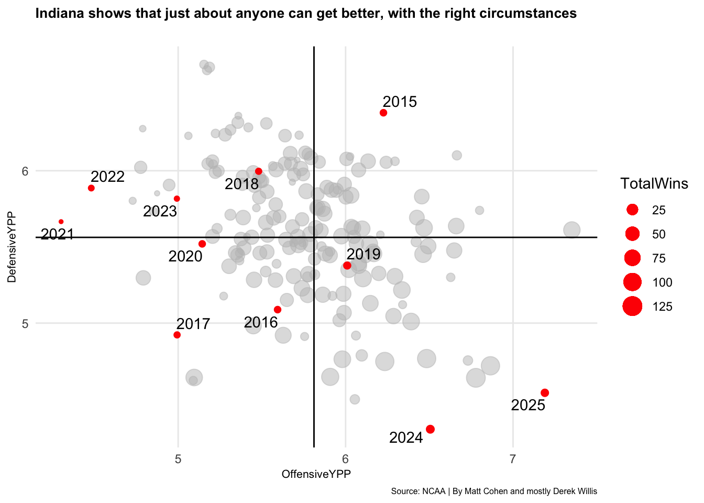

Rows: 17343 Columns: 79
── Column specification ────────────────────────────────────────────────────────
Delimiter: ","
chr (11): Location, Opponent, Result, OT, Bowl.x, TeamURL, Outcome, Bowl.y,...
dbl (64): Rk, Gtm, Points, PointsOpp, PassCmp, PassAtt, PassPct, PassYds, P...
lgl (3): Score, TeamScore, OpponentScore
date (1): Date
ℹ Use `spec()` to retrieve the full column specification for this data.
ℹ Specify the column types or set `show_col_types = FALSE` to quiet this message.
ggplot() +geom_point(data=ypp, aes(x=OffensiveYPP, y=DefensiveYPP, size=TotalWins), color="grey", alpha=.5) +geom_point(data=maryland, aes(x=OffensiveYPP, y=DefensiveYPP, size=TotalWins), color="red") +geom_point(data=oklahoma, aes(x=OffensiveYPP, y=DefensiveYPP, size=TotalWins), color="red") +geom_point(data=alabama, aes(x=OffensiveYPP, y=DefensiveYPP, size=TotalWins), color="red") +geom_point(data=ohiost, aes(x=OffensiveYPP, y=DefensiveYPP, size=TotalWins), color="red") +geom_point(data=texas, aes(x=OffensiveYPP, y=DefensiveYPP, size=TotalWins), color="red") +geom_point(data=clemson, aes(x=OffensiveYPP, y=DefensiveYPP, size=TotalWins), color="red") +geom_point(data=georgia, aes(x=OffensiveYPP, y=DefensiveYPP, size=TotalWins), color="red") +geom_point(data=michigan, aes(x=OffensiveYPP, y=DefensiveYPP, size=TotalWins), color="red") +geom_point(data=umass, aes(x=OffensiveYPP, y=DefensiveYPP, size=TotalWins), color="red") +geom_vline(xintercept =5.811255) +geom_hline(yintercept =5.562701) +geom_text_repel(data=maryland, aes(x=OffensiveYPP, y=DefensiveYPP, label=Team) ) +geom_text_repel(data=oklahoma, aes(x=OffensiveYPP, y=DefensiveYPP, label=Team) ) +geom_text_repel(data=alabama, aes(x=OffensiveYPP, y=DefensiveYPP, label=Team) ) +geom_text_repel(data=ohiost, aes(x=OffensiveYPP, y=DefensiveYPP, label=Team) ) +geom_text_repel(data=texas, aes(x=OffensiveYPP, y=DefensiveYPP, label=Team) ) +geom_text_repel(data=clemson, aes(x=OffensiveYPP, y=DefensiveYPP, label=Team) ) +geom_text_repel(data=georgia, aes(x=OffensiveYPP, y=DefensiveYPP, label=Team) ) +geom_text_repel(data=michigan, aes(x=OffensiveYPP, y=DefensiveYPP, label=Team) ) +geom_text_repel(data=umass, aes(x=OffensiveYPP, y=DefensiveYPP, label=Team) ) +labs(title="Maryland among NCAA's most medicore teams over the last decade", subtitle="Since 2015, the Terps are near the midpoint of all FBS teams in terms of offensive and defense yards per play.", caption="Teams that changed conferences appear twice. For example, the larger Oklahoma circle is its Big 12 games and the smaller one is its SEC performance. Source: NCAA | By Matt Cohen and mostly Derek Willis", x ="Offensive yards per play", y ="Defensive yards per play") +theme_minimal() +theme(plot.title =element_text(size =10, face ="bold"),axis.title =element_text(size =8), plot.subtitle =element_text(size=8), plot.caption =element_text(size=6),panel.grid.minor =element_blank() )

There are only a small handful of college football programs that have been able to win at a consistent basis. The names of those schools are familiar and anticipated. Decidedly, Maryland isn’t one of them. Far from it, in fact. The schools that consistently reside at the top of the sport have several game performance metrics in common. Maryland isn’t anywhere close.
Since the start of 2015, Maryland has been among the NCAA’s most mediocre teams in regard to its offensive and defensive yards per play output. Since the beginning of the 2015 season, Maryland is 54-71, a losing record. Its 54 wins are 92 out of 172 teams in a college football game logs data set — which does include the fact that teams which switched conferences since 2015 were counted twice. This is seen in the chart above with some labeled teams appearing twice. For example, Oklahoma’s smaller circle represents its SEC performance while the larger is the Big 12.
The chart above displays an overall over the entire time between 2015 and 2025 for Maryland’s position relative to the rest of college football programs in terms of offensive yards per play and defensive yards per play. In the chart, Maryland is right in the middle and clumped with among the most densely populated land of mediocrity in college football. Given the length of time this data covers, teams have the opportunities for regression toward a mean in the middle of the sport. There aren’t many teams who were truly terrible during this span of time, and there are only a handful of teams that were truly great.
Maryland is average. So is most of the sport. Average, in Maryland’s case, means averaging 5.66 yards per play on offense and 5.49 yards per play on defense between 2015 and 2025 — with the 2025 data including games played as of Nov. 1. Both of those stats are outside the top 100 teams.
Comparatively, the most successful teams during that time span (Alabama, Ohio State, Georgia, Clemson, Oklahoma and Michigan to spotlight a few) are all clustered in a similar region of this chart — toward the bottom right which signifies both high offensive yards per play and low defensive yards per play. In other words, well rounded teams that perform well on both sides of the ball also tend to win a lot of games. This is success visualized: the best teams producing similar statistical outputs.
On the other end are the sports’ worst teams, like UMass. UMass (in multiple conferences) allows a ton of yards on defense and doesn’t produce many on offense. It’s why it’s consistently been among the worst teams in the country.
Maryland is not in either quadrant. Maryland finds itself among the better half of average defense yards per play, but the worse half of offensive yards per play.
Let’s look at this further, breaking Maryland down by season.
Code
#adding season columncfblogs <- cfblogs |>mutate(season =ifelse(month(Date) ==1, year(Date) -1, year(Date)))#update win/loss codewinlosslogs <- cfblogs |>mutate(wins =case_when(grepl("W", Outcome) ~1, grepl("L", Outcome) ~0))#update to have by season datawinlosslogs |>group_by(Team, Conference, season) |>summarise(TotalPlays =sum(TotalPlays), TotalYards =sum(TotalYds), DefensivePlays =sum(DefTotalPlays), DefensiveYards =sum(DefTotalYds), TotalWins =sum(wins)) |>mutate(OffensiveYPP = TotalYards/TotalPlays, DefensiveYPP = DefensiveYards/DefensivePlays) -> byseasonypp
`summarise()` has grouped output by 'Team', 'Conference'. You can override
using the `.groups` argument.
Code
#prepping labelsmaryland_2015 <- byseasonypp |>filter(Team =="Maryland", season ==2015)maryland_2016 <- byseasonypp |>filter(Team =="Maryland", season ==2016)maryland_2017 <- byseasonypp |>filter(Team =="Maryland", season ==2017)maryland_2018 <- byseasonypp |>filter(Team =="Maryland", season ==2018)maryland_2019 <- byseasonypp |>filter(Team =="Maryland", season ==2019)maryland_2020 <- byseasonypp |>filter(Team =="Maryland", season ==2020)maryland_2021 <- byseasonypp |>filter(Team =="Maryland", season ==2021)maryland_2022 <- byseasonypp |>filter(Team =="Maryland", season ==2022)maryland_2023 <- byseasonypp |>filter(Team =="Maryland", season ==2023)maryland_2024 <- byseasonypp |>filter(Team =="Maryland", season ==2024)maryland_2025 <- byseasonypp |>filter(Team =="Maryland", season ==2025)byseasonypp |>ungroup() |>summarise(offense =mean(OffensiveYPP), defense =mean(DefensiveYPP) )
ggplot() +geom_point(data=ypp, aes(x=OffensiveYPP, y=DefensiveYPP, size=TotalWins), color="grey", alpha=.5) +geom_point(data=maryland_2015, aes(x=OffensiveYPP, y=DefensiveYPP, size=TotalWins), color="red") +geom_point(data=maryland_2016, aes(x=OffensiveYPP, y=DefensiveYPP, size=TotalWins), color="red") +geom_point(data=maryland_2017, aes(x=OffensiveYPP, y=DefensiveYPP, size=TotalWins), color="red") +geom_point(data=maryland_2018, aes(x=OffensiveYPP, y=DefensiveYPP, size=TotalWins), color="red") +geom_point(data=maryland_2019, aes(x=OffensiveYPP, y=DefensiveYPP, size=TotalWins), color="red") +geom_point(data=maryland_2020, aes(x=OffensiveYPP, y=DefensiveYPP, size=TotalWins), color="red") +geom_point(data=maryland_2021, aes(x=OffensiveYPP, y=DefensiveYPP, size=TotalWins), color="red") +geom_point(data=maryland_2022, aes(x=OffensiveYPP, y=DefensiveYPP, size=TotalWins), color="red") +geom_point(data=maryland_2023, aes(x=OffensiveYPP, y=DefensiveYPP, size=TotalWins), color="red") +geom_point(data=maryland_2024, aes(x=OffensiveYPP, y=DefensiveYPP, size=TotalWins), color="red") +geom_point(data=maryland_2025, aes(x=OffensiveYPP, y=DefensiveYPP, size=TotalWins), color="red") +geom_vline(xintercept =5.811255) +geom_hline(yintercept =5.562701) +geom_text_repel(data=maryland_2015, aes(x=OffensiveYPP, y=DefensiveYPP, label= season) ) +geom_text_repel(data=maryland_2016, aes(x=OffensiveYPP, y=DefensiveYPP, label= season) ) +geom_text_repel(data=maryland_2017, aes(x=OffensiveYPP, y=DefensiveYPP, label= season) ) +geom_text_repel(data=maryland_2018, aes(x=OffensiveYPP, y=DefensiveYPP, label= season) ) +geom_text_repel(data=maryland_2019, aes(x=OffensiveYPP, y=DefensiveYPP, label= season) ) +geom_text_repel(data=maryland_2020, aes(x=OffensiveYPP, y=DefensiveYPP, label= season) ) +geom_text_repel(data=maryland_2021, aes(x=OffensiveYPP, y=DefensiveYPP, label= season) ) +geom_text_repel(data=maryland_2022, aes(x=OffensiveYPP, y=DefensiveYPP, label= season) ) +geom_text_repel(data=maryland_2023, aes(x=OffensiveYPP, y=DefensiveYPP, label= season) ) +geom_text_repel(data=maryland_2024, aes(x=OffensiveYPP, y=DefensiveYPP, label= season) ) +geom_text_repel(data=maryland_2025, aes(x=OffensiveYPP, y=DefensiveYPP, label= season) ) +labs(title="Broken down by season, Maryland has been inconsistent", subtitle="Since 2015, Maryland has produced teams that finished in all four possible quadrants.", caption="Source: NCAA | By Matt Cohen and mostly Derek Willis", x ="Offensive yards per play", y ="Defensive yards per play") +theme_minimal() +theme(plot.title =element_text(size =10, face ="bold"),axis.title =element_text(size =8), plot.subtitle =element_text(size=8), plot.caption =element_text(size=6),panel.grid.minor =element_blank() )

Plotted against the overall results for the rest of the country, Maryland’s season by season team outputs show a lack of consistency over the last 10 years. Maryland had four full-time head coaches during this time frame: the last year of Randy Edsall (which included a stint of Mike Locksley as the interim), then D.J. Durkin’s tenure, a year of Matt Canada and then Locksley since 2019.
Locksley alone has had teams finish in all four of the above chart’s quadrants. He’s had teams that were among the upper half offensively including 2020, 2021 and 2023. The 2020 team averaged nearly 6.6 yards per play, but only played five games because of the pandemic season’s schedule. He’s also had some really poor defensive teams like his first team in 2019. The 2022 and 2023 teams — two of Maryland’s three bowl appearances (and wins) under Locksley — were Maryland’s two best defensive yards per play seasons for any coach since 2015. In 2021, the other Locksley bowl team, Maryland was strong enough offensively to overcome its second worst defensive defensive yards per play season during this time frame.
The only consistency, somewhat, was Durkin’s two teams (2016 and 2017) finishing with a somewhat similar statistical output. Obviously, there were significantly more important issues with his time at Maryland.
With so much year-by-year inconsistency, it’s no wonder Maryland has struggled to find sustained success. Two seasons finishing at 8-5 were Maryland’s best years in this set. It’s why the average of all the inconsistency puts Maryland right at the middle of the chart overall — mediocre. Maryland has had changing identities from year-to-year and hasn’t had much to rely on it.
The best programs don’t have these questions… like Alabama.
Code
#prepping alabama labelsalabama_2015 <- byseasonypp |>filter(Team =="Alabama", season ==2015)alabama_2016 <- byseasonypp |>filter(Team =="Alabama", season ==2016)alabama_2017 <- byseasonypp |>filter(Team =="Alabama", season ==2017)alabama_2018 <- byseasonypp |>filter(Team =="Alabama", season ==2018)alabama_2019 <- byseasonypp |>filter(Team =="Alabama", season ==2019)alabama_2020 <- byseasonypp |>filter(Team =="Alabama", season ==2020)alabama_2021 <- byseasonypp |>filter(Team =="Alabama", season ==2021)alabama_2022 <- byseasonypp |>filter(Team =="Alabama", season ==2022)alabama_2023 <- byseasonypp |>filter(Team =="Alabama", season ==2023)alabama_2024 <- byseasonypp |>filter(Team =="Alabama", season ==2024)alabama_2025 <- byseasonypp |>filter(Team =="Alabama", season ==2025)ggplot() +geom_point(data=ypp, aes(x=OffensiveYPP, y=DefensiveYPP, size=TotalWins), color="grey", alpha=.5) +geom_point(data=alabama_2015, aes(x=OffensiveYPP, y=DefensiveYPP, size=TotalWins), color="gold") +geom_point(data=alabama_2016, aes(x=OffensiveYPP, y=DefensiveYPP, size=TotalWins), color="red") +geom_point(data=alabama_2017, aes(x=OffensiveYPP, y=DefensiveYPP, size=TotalWins), color="gold") +geom_point(data=alabama_2018, aes(x=OffensiveYPP, y=DefensiveYPP, size=TotalWins), color="red") +geom_point(data=alabama_2019, aes(x=OffensiveYPP, y=DefensiveYPP, size=TotalWins), color="red") +geom_point(data=alabama_2020, aes(x=OffensiveYPP, y=DefensiveYPP, size=TotalWins), color="gold") +geom_point(data=alabama_2021, aes(x=OffensiveYPP, y=DefensiveYPP, size=TotalWins), color="red") +geom_point(data=alabama_2022, aes(x=OffensiveYPP, y=DefensiveYPP, size=TotalWins), color="red") +geom_point(data=alabama_2023, aes(x=OffensiveYPP, y=DefensiveYPP, size=TotalWins), color="red") +geom_point(data=alabama_2024, aes(x=OffensiveYPP, y=DefensiveYPP, size=TotalWins), color="red") +geom_point(data=alabama_2025, aes(x=OffensiveYPP, y=DefensiveYPP, size=TotalWins), color="red") +geom_vline(xintercept =5.811255) +geom_hline(yintercept =5.562701) +geom_text_repel(data=alabama_2015, aes(x=OffensiveYPP, y=DefensiveYPP, label= season) ) +geom_text_repel(data=alabama_2016, aes(x=OffensiveYPP, y=DefensiveYPP, label= season) ) +geom_text_repel(data=alabama_2017, aes(x=OffensiveYPP, y=DefensiveYPP, label= season) ) +geom_text_repel(data=alabama_2018, aes(x=OffensiveYPP, y=DefensiveYPP, label= season) ) +geom_text_repel(data=alabama_2019, aes(x=OffensiveYPP, y=DefensiveYPP, label= season) ) +geom_text_repel(data=alabama_2020, aes(x=OffensiveYPP, y=DefensiveYPP, label= season) ) +geom_text_repel(data=alabama_2021, aes(x=OffensiveYPP, y=DefensiveYPP, label= season) ) +geom_text_repel(data=alabama_2022, aes(x=OffensiveYPP, y=DefensiveYPP, label= season) ) +geom_text_repel(data=alabama_2023, aes(x=OffensiveYPP, y=DefensiveYPP, label= season) ) +geom_text_repel(data=alabama_2024, aes(x=OffensiveYPP, y=DefensiveYPP, label= season) ) +geom_text_repel(data=alabama_2025, aes(x=OffensiveYPP, y=DefensiveYPP, label= season) ) +labs(title="Unlike Maryland, Alabama has an identity.", subtitle="Alabama's year-by-year consistent performances and identity explain why it is college football's most successful program.", caption="Source: NCAA | By Matt Cohen and mostly Derek Willis", x ="Offensive yards per play", y ="Defensive yards per play") +theme_minimal() +theme(plot.title =element_text(size =10, face ="bold"),axis.title =element_text(size =8), plot.subtitle =element_text(size=8), plot.caption =element_text(size=6),panel.grid.minor =element_blank() )

Unlike Maryland, Alabama is consistent and has an identity. Every single Alabama team during this time frame finished in the quadrant with the best offensive yards per play output and and the best defensive yards per play output.
Alabama’s three national championship winning teams since 2015 are marked above in gold. That includes its best overall team during the whole time frame: 2017. The 2015 and 2017 teams were two of Alabama’s best defensive teams and the 2020 team was its second best offensive team. That’s nit picking to an extent given how clearly elite every single Alabama team was during this time.
Maryland is unlikely to ever hit a run like Alabama. But Alabama is seen as the standard and Locksley was hired from Alabama. There is a clear consistency displayed by the data that leads to winning. Maryland doesn’t have that. Nor is the inconsistency trending toward the best end of the spectrum enough to create many high moments for the program.
Maryland has a lot of external hurdles to be a winner beyond just better on-field performance. Breaking out of mediocrity is incredibly difficult and its why so much of the sport lives in the land of mediocrity.
But it is possible.
Code
indiana_2015 <- byseasonypp |>filter(Team =="Indiana", season ==2015)indiana_2016 <- byseasonypp |>filter(Team =="Indiana", season ==2016)indiana_2017 <- byseasonypp |>filter(Team =="Indiana", season ==2017)indiana_2018 <- byseasonypp |>filter(Team =="Indiana", season ==2018)indiana_2019 <- byseasonypp |>filter(Team =="Indiana", season ==2019)indiana_2020 <- byseasonypp |>filter(Team =="Indiana", season ==2020)indiana_2021 <- byseasonypp |>filter(Team =="Indiana", season ==2021)indiana_2022 <- byseasonypp |>filter(Team =="Indiana", season ==2022)indiana_2023 <- byseasonypp |>filter(Team =="Indiana", season ==2023)indiana_2024 <- byseasonypp |>filter(Team =="Indiana", season ==2024)indiana_2025 <- byseasonypp |>filter(Team =="Indiana", season ==2025)ggplot() +geom_point(data=ypp, aes(x=OffensiveYPP, y=DefensiveYPP, size=TotalWins), color="grey", alpha=.5) +geom_point(data=indiana_2015, aes(x=OffensiveYPP, y=DefensiveYPP, size=TotalWins), color="red") +geom_point(data=indiana_2016, aes(x=OffensiveYPP, y=DefensiveYPP, size=TotalWins), color="red") +geom_point(data=indiana_2017, aes(x=OffensiveYPP, y=DefensiveYPP, size=TotalWins), color="red") +geom_point(data=indiana_2018, aes(x=OffensiveYPP, y=DefensiveYPP, size=TotalWins), color="red") +geom_point(data=indiana_2019, aes(x=OffensiveYPP, y=DefensiveYPP, size=TotalWins), color="red") +geom_point(data=indiana_2020, aes(x=OffensiveYPP, y=DefensiveYPP, size=TotalWins), color="red") +geom_point(data=indiana_2021, aes(x=OffensiveYPP, y=DefensiveYPP, size=TotalWins), color="red") +geom_point(data=indiana_2022, aes(x=OffensiveYPP, y=DefensiveYPP, size=TotalWins), color="red") +geom_point(data=indiana_2023, aes(x=OffensiveYPP, y=DefensiveYPP, size=TotalWins), color="red") +geom_point(data=indiana_2024, aes(x=OffensiveYPP, y=DefensiveYPP, size=TotalWins), color="red") +geom_point(data=indiana_2025, aes(x=OffensiveYPP, y=DefensiveYPP, size=TotalWins), color="red") +geom_vline(xintercept =5.811255) +geom_hline(yintercept =5.562701) +geom_text_repel(data=indiana_2015, aes(x=OffensiveYPP, y=DefensiveYPP, label= season) ) +geom_text_repel(data=indiana_2016, aes(x=OffensiveYPP, y=DefensiveYPP, label= season) ) +geom_text_repel(data=indiana_2017, aes(x=OffensiveYPP, y=DefensiveYPP, label= season) ) +geom_text_repel(data=indiana_2018, aes(x=OffensiveYPP, y=DefensiveYPP, label= season) ) +geom_text_repel(data=indiana_2019, aes(x=OffensiveYPP, y=DefensiveYPP, label= season) ) +geom_text_repel(data=indiana_2020, aes(x=OffensiveYPP, y=DefensiveYPP, label= season) ) +geom_text_repel(data=indiana_2021, aes(x=OffensiveYPP, y=DefensiveYPP, label= season) ) +geom_text_repel(data=indiana_2022, aes(x=OffensiveYPP, y=DefensiveYPP, label= season) ) +geom_text_repel(data=indiana_2023, aes(x=OffensiveYPP, y=DefensiveYPP, label= season) ) +geom_text_repel(data=indiana_2024, aes(x=OffensiveYPP, y=DefensiveYPP, label= season) ) +geom_text_repel(data=indiana_2025, aes(x=OffensiveYPP, y=DefensiveYPP, label= season) ) +labs(title="Indiana shows that just about anyone can get better, with the right circumstances", subtitle="Maryland might not compare to Alabama, but it certainly can to Indiana.", x ="Offensive yards per play", y ="Defensive yards per play", caption="Source: NCAA | By Matt Cohen and mostly Derek Willis") +theme_minimal() +theme(plot.title =element_text(size =10, face ="bold"),axis.title =element_text(size =8), plot.subtitle =element_text(size=8), plot.caption =element_text(size=6),panel.grid.minor =element_blank() )

The above chart shows Indiana, a usually annually reliable doormat nationally. And for the most part during the time span here, Indiana was terrible! It consistently showed to be worse than medicore. And the team’s overall record followed suit.
That changed with the right coaching staff putting together the right roster. With Curt Cignetti, Indiana has vaulted itself with two statistically elite seasons in 2024 and thus far in 2025, very similar (if not better) outputs than Alabama. It’s why Indiana is ranked No. 2 in the country.
So if the program with the most losses in the history of the sport can do it, so can Maryland. Someone might just have to be beg Kevin Plank to write a bigger check.